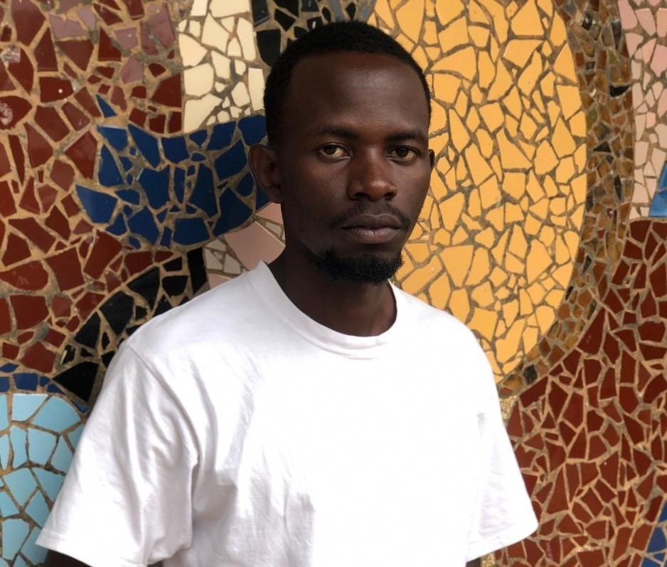

About Me
My Name is Odari Derrick Atongo and I am a passionate Front-End developer based in Nairobi ,Kenya who is currently in a program with other talented peers called Zuri.team.I like to think of my tech journey as an experience that continue to build up with each project and collaboration.With dedication to functionality and curiosity for what's ahead of the curve .I keep my work practical ,relevant and creative.Have a look at my past projects and feel free to reach out with any questions and opportunities.